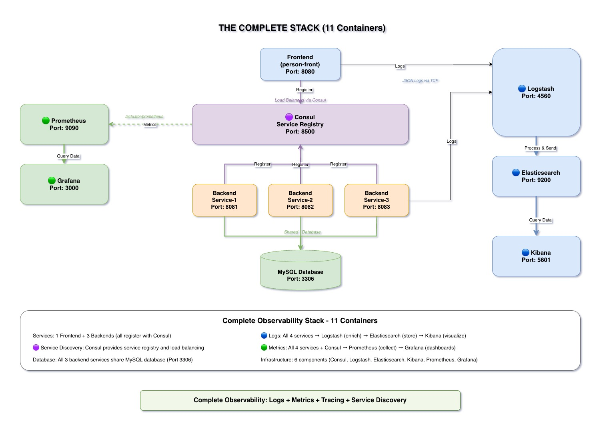

Real-World Implementation: The Complete Stack
11 Docker containers working together to provide full observability.

Complete Architecture
Our observability stack consists of 11 Docker containers, each serving a specific purpose. This is a production-ready, fully operational implementation that you can run locally.
The Four Key Components
🔍 Service Discovery: Consul
- Service Registry: Services register themselves
- Health Checking: Automatic failure detection
- Load Balancing: Client-side distribution
- Service Metadata: Tags, versions, endpoints
Container: consul (port 8500)
📝 Logs: ELK Stack
- Elasticsearch: Stores and indexes logs
- Logstash: Collects and processes logs
- Kibana: Visualizes and queries logs
Containers: elasticsearch (9200/9300), logstash (4560/5044), kibana (5601)
📊 Metrics: Prometheus + Grafana
- Prometheus: Time-series database and scraper
- Grafana: Dashboards and visualization
- Micrometer: Metrics abstraction in Spring Boot
Containers: prometheus (9090), grafana (3000)
🗺️ Tracing: MDC
- RequestLoggingFilter: Sets MDC values
- MdcPropagationInterceptor: Propagates context
- HTTP Headers: X-Request-ID and more
Implementation: Built into microservices (no separate container)
The 11 Docker Containers
Application Services (5)
- person-front: Frontend web app (port 8080)
- person-service-client-1: Backend instance 1 (port 8081)
- person-service-client-2: Backend instance 2 (port 8082)
- person-service-client-3: Backend instance 3 (port 8083)
- mysql: Database (port 3306)
Observability Tools (6)
- consul: Service registry (port 8500)
- elasticsearch: Log storage (ports 9200, 9300)
- logstash: Log processing (ports 4560, 5044)
- kibana: Log visualization (port 5601)
- prometheus: Metrics collection (port 9090)
- grafana: Metrics visualization (port 3000)
How Everything Integrates
Standard Protocols
- Consul: Services register via Spring Cloud Consul Discovery
- ELK: Services send JSON logs to Logstash via TCP
- Prometheus: Scrapes /actuator/prometheus endpoints via HTTP
- Grafana: Queries Prometheus via PromQL
- MDC: Propagates via HTTP headers (X-Request-ID, etc.)
Running the Complete Stack
Single Command to Start Everything
docker compose up --build -dThis command:
- Builds all 5 application containers
- Starts all 6 observability tools
- Configures networking between containers
- Waits for dependencies (MySQL, Consul)
- Registers services with Consul
- Starts sending logs to ELK
- Exposes metrics to Prometheus
Result: Fully operational observability stack in under 5 minutes!
Key Takeaways
- Complete stack runs in 11 Docker containers (5 app + 6 tools)
- Each tool serves a specific purpose: discovery, logs, metrics, visualization
- All integrated through standard protocols (HTTP, TCP, PromQL)
- Production-ready, fully operational, can be run locally